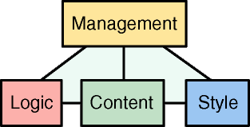

by Stefano Mazzocchi
The Cocoon Project has gone a long way since it's creation on January 1999. It started as a simple servlet for static XSL styling and became more and more powerful as new features were added. Unfortunately, design decisions made early in the project influenced its evolution. Today, some of those constraints that shaped the project were modified as XML standards have evolved and solidified. For this reason, those design decisions need to be reconsidered under this new light.
While Cocoon started as a small step in the direction of a new web publishing idea based on better design patterns and reviewed estimations of management issues, the technology used was not mature enough for tools to emerge. Today, most web engineers consider XML as the key for an improved web model and web site managers see XML as a way to reduce costs and ease production.
In an era where services rather than software will be key for economical success, a better and less expensive model for web publishing will be a winner, especially if based on open standards.
Web serving environments must be fast and scalable to be useful. Cocoon1 was born as a "proof of concept" rather than a production software and had significant design restrictions based mainly on the availability of freely redistributable tools. Other issues were lack of detailed knowledge on the APIs available as well as underestimation of the project success, being created as a way to learn XSL rather than a full publishing system capable of taking care of all XML web publishing needs.
For the above reasons, Cocoon1 was based on the DOM level 1 API which is a passive API and was intended mainly for client side operation. This is mainly due to the fact that most (if not all!) DOM implementations require the document to reside in memory. While this is practical for small documents and thus good for the "proof of concept" stage, it is now considered a main design constraint for Cocoon scalability.
Since the goal of Cocoon2 is the ability to process simultaneously multiple 100Mb documents in JVM with a few Mbs of heap size, careful memory use and tuning of internal components is a key issue. To reach this goal, an improved API model was needed. This is now identified in the SAX API which is, unlike DOM, event based (so active, in the sense that its design is based the inversion of control principle).
The event model allows document producers to trigger producing events that get handled in the various processing stages and get finally formatted in the response stream. This has significant impacts on performance and memory needs:
incremental operation: the response is created during document production. Client's perceived performance is dramatically improved since clients can start receiving data as soon as it is created, not after all processing stages have been performed. In those cases where incremental operation is not possible (for example, element sorting), internal buffers store the events until the operation can be performed. However, even in these cases performance can be increased with the use of tuned memory structures.
lowered memory consumption: since most of the server processing required in Cocoon is incremental, an incremental model allows XML production events to be transformed directly into output events and character written on streams, thus avoiding the need to store them in memory.
easier scalability: reduce memory needs allow more concurrent operation to be possible, thus allowing the publishing system to scale as the load increases.
more optimizable code model: modern virtual machines are based on the idea of hot spots, code fragments that are used often and, if optimized, increase the process execution by far. This new event model allows easier detection of hot spots since it's a method driven operation, rather than a memory driven one. Hot methods can be identified earlier and their optimization performed better.
reduced garbage collection: even the most advanced and lightweight DOM implementation require at least three to five times (and sometimes much more than this) more memory than original document size. This does not only reduce the scalability of the operation, but also impact overall performance by increasing the number of memory garbage that must be collected after the response in sent to the client. Even if modern virtual machines reduced the overhead of garbage collection, less garbage will always have performance and scalability impacts.
The above points, alone, would be enough for the Cocoon2 paradigm shift, even if this event based model impacts not only the general architecture of the publishing system but also its internal processing components such as XSLT processing and PDF formatting. These components will require substantial work and maybe design reconsideration to be able to follow a pure event-based model. The Cocoon Project will work closely with the other component projects to be able to influence their operation in this direction.
Another design choice that should be revised is the reactor pattern that was introduced to allow components to be connected in more flexible way. In fact, opposed to the fixed pipe model used up to Cocoon 1.3.1, the reactor approach allows components to be dynamically connected, depending on reaction instructions introduced inside the documents.
While this at first seemed a very advanced and highly appealing model, it turned out to be a very dangerous approach. The first concern is mainly technical: porting the reactor pattern under an event-based model requires limitations and tradeoffs since the generated events must be cached until a reaction instruction is encountered.
But even if the technical difficulties are solved, a key limitation remains: there is no single point of management.
The web was created to reduce information management costs by distributing them back on information owners. While this model is great for user communities (scientists, students, employees, or people in general) each of them managing small amount of personal information, it becomes impractical for highly centralized information systems where distributed management is simply not practical.
While in the HTML web model the page format and URL names where the only necessary contracts between individuals to create a world wide web, in more structured information systems the number of contracts increases by a significant factor due to the need of increased coherence between the hosted information: common style, common design issues, common languages, server side logic integration, data validation, etc...
It is only under this light that XML and its web model reveal their power: the HTML web model had too little contracts to be able to develop a structured and more coherent distributed information system, reason that is mainly imposed by the lack of good and algorithmically certain information indexing and knowledge seeking. Lacks that tend to degrade the quality of the truly distributed web in favor of more structured web sites (that based their improved site structure on internal contracts).
The simplification and engineering of web site management is considered one of the most important Cocoon2 goals. This is done mainly by technologically imposing a reduced number of contracts and place them in a hierarchical shape suitable to replace current high-structure web site management models.
The model that Cocoon2 adopts is the "pyramid model of web contracts" which is outlined in the picture below

and is composed by four different working contexts (the rectangles)
Management: the people that decide what the site should contain, how it should behave and how it should appear
Content: the people responsible to write, own and manage the site content. This context may contain several sub-contexts one for each language used to express page content.
Logic: the people responsible for integration with dynamic content generation technologies and database systems.
Style: the people responsible for information presentation, look & feel, site graphics and its maintenance.
and five contracts contexts (the lines)
management - content
management - logic
management - style
content - logic
content - style
The above model can be applied only if the different contexts never overlap, otherwise there is no chance of having a single management point. For example, if the W3C-recommended method to link stylesheets to XML documents is used, the content and style contexts overlap and it's impossible to change the styling behavior of the document without changing it. The same is true for the processing instructions used by the Cocoon1 reactor to drive the page processing: each stage concur to determine the result thus increasing management and debug complexity. Another overlapping in context contracts is the need for URL-encoded parameters to drive the page output. These overlaps break the pyramid model and increase the management costs.
In Cocoon2, the reactor pattern will be abandoned in favor of a chain mapping technique. This is based on the fact that the number of different contracts is limited even for big sites (for example, even if the pages are millions, they probably all share no more than a few different DTDs and each DTD has no more than a couple of stylesheets).
Also, for performance reasons, Cocoon2 will try to compile everything that is possibly compilable (pages/XSP into producers, stylesheets into processors, etc...) so, in this new model, the processing chain that generates the page contains (in a direct executable form) all the information/logic that handles the requested resource to generate its response.
This means that instead of using even-driven request-time DTD interpretation (done in all Cocoon1 processors), these will be either compiled into processors directly (XSLT stylesheet compilation) or compiled into producers using logicsheets and XSP which will remove totally the need for request-time interpretation solutions like DCP that will be removed.
The cache system in Cocoon1 will be ported with no important design changes since it's very flexible and was not polluted by early design constraints since it appeared in later versions. The issue regards static file caching that, no matter what, will always be slower than direct web server caching.
To be able to put most of the static part job back on the web server (where it belongs), Cocoon2 will greatly improve it's command line operation, allowing the creation of site makefiles that will automatically scan the web site and the source documents and will provide a way to regenerate the static part of a web site (images and tables included!) based on the same XML model used in the dynamic operation version.
It will be up to the web server administrator to use static regeneration capabilities on a time basis, manually or triggered by some particular event (database update signal) since Cocoon2 will only provide servlet and command line capabilities. The nice integration is based on the fact that there will be no behavioral difference if the files are dynamically generated in Cocoon2 via the servlet operation and cached internally or pre-generated and served directly by the web server, as long as URI contracts are kept the same by the system administrator (via URL-rewriting or aliasing)
Also, it will be possible to avoid on-fly page and stylesheet compilation (which make debugging harder) with command line pre-compilation hooks that will work like normal compilers from a developer's point of view.
Cocoon2 is a big and very ambitious project, not only for the technological issues involved (which will require strong integration with XML components) but also for the significant paradigm shifts imposed by the new technologies. On the other hand, we strongly believe this to be the winner model for future web engineering and if you believe in this yourself, we invite you to join us or help us in any way you can provide.
Thank you all for reading this far and, finally, the Cocoon2 motto: kick ass or die! :-)
Copyright (c) The Apache XML Project.
All rights reserved.